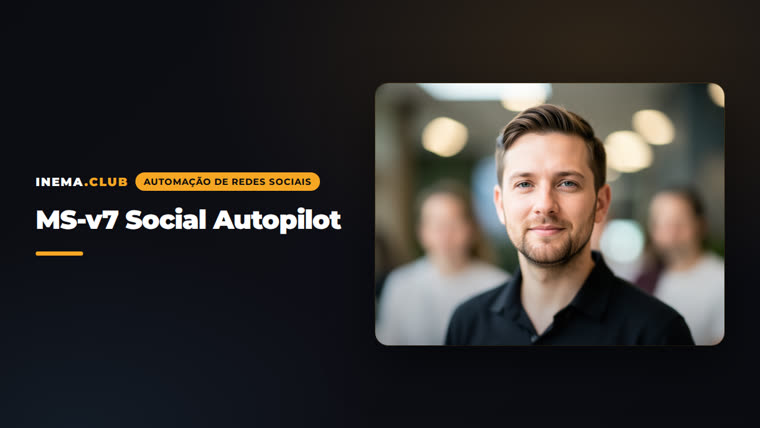

Un archivo de voz de marca + 3 comandos. Claude investiga, escribe, genera el visual y programa. Nada se publica sin tu "sí".
Adaptación de "Social Autopilot" para la stack INEMA: todo se ejecuta dentro de Claude Code, con proveedores, marcas y redes configurables en un único config.yaml.
Uno brand-voice.md por marca: quién eres, público, ofertas, frases reales, historias verdaderas y reglas por red. Es lo que hace que la publicación suene como tú.
Publicación mediante Metricool (validado), Blotato o copia manual. Imágenes con flux2-klein o Magnific. Cambiar de proveedor requiere una línea en el config.
Cada publicación pasa por el gate sí / borrador / no. No se programa nada sin tu respuesta explícita en la conversación.
El flujo diario de /ms-post. El semanal (/ms-semana) hace lo mismo para 5-7 posts de una vez, con retroalimentación por analytics antes.
Entrevista de voz (una pregunta a la vez), redes activas y proveedores. Una vez por marca.
La publicación de hoy. Tres preguntas, tres opciones, visual y programación.
Repaso de la semana pasada, tabla de 5-7 publicaciones para aprobar y cola programada. ~15 min.
Una transcripción, un artículo o una URL se convierte en una publicación independiente por red.
Solo Claude Code es obligatorio. Sin proveedor de publicación, las skills entregan el texto listo para copiar.
Plan Pro o superior. Ábrelo dentro de la carpeta del proyecto: lee el CLAUDE.md por sí solo.
# clonar y abrir git clone git@github.com:inematds/ms-v7.git ~/projetos/ms-v7 cd ~/projetos/ms-v7 && claude
Programa publicaciones en Instagram, TikTok y más. Plan Free: 20 publicaciones/mes, sin LinkedIn/X.
claude mcp add --transport http metricool \ https://ai.metricool.com/mcp -s user # después: /mcp → metricool → Authenticate
Los proveedores MCP solo aceptan URL directas. La opción predeterminada es un GitHub Release; las skills se suben automáticamente.
gh release upload v1 arquivo.png \
--repo inematds/midia --clobberTodos los comandos de abajo se escriben dentro de Claude Code, en la carpeta del proyecto. Las preguntas siempre se hacen en texto libre, una por vez.
Crea brands/<slug>/brand-voice.md con una entrevista y completa el config.yaml. Si la marca ya está descrita en algún lugar, di dónde: lo completa de antemano y solo pregunta lo que falta.
/ms-config # voz → redes activas → proveedor de publicación → prueba de voz
Responde con la red, el tema y el objetivo. Investiga qué está funcionando en la red, escribe 3 opciones con una historia o un número de tu archivo y tú eliges.
/ms-post # 1. ¿Red? → instagram # 2. ¿Tema? → "por qué leer el system prompt" (o "investiga qué es tendencia") # 3. ¿Objetivo? → seguidores
El visual se genera con el proveedor de imágenes configurado. Después te muestra la publicación final con el mejor horario y espera tu respuesta.
# ¿Visual aprobado? → sí # ¿Lo programo? (sí / borrador / no) sim # agenda con publicación automática rascunho # queda en el planner del proveedor, no publica não # solo el texto, para copiar
Repaso de los últimos 7 días mediante analytics, tres preguntas para la semana, tabla de 5-7 publicaciones para que edites y toda la cola programada con un solo "sí".
/ms-semana # retro → 3 preguntas → tabla → "¿Editas algo o apruebo?" → cola → "¿Programo la cola?"
Pega la transcripción, la ruta del archivo o la URL. La única pregunta: en qué redes. Cada publicación es autónoma; nunca dice "en este video".
/ms-reaproveita https://youtube.com/watch?v=... # o un .md, .txt, URL de artículo
Las skills hacen commit al final de cada publicación. Tú solo haces el push; el historial queda en posts/.
git push # autor inematds <inematds@gmail.com>
O config.yaml decide quién hace qué. El brand-voice.md decide cómo suena.
# config.yaml (fragmento) marca_ativa: inema marcas: inema: redes: instagram: { conta: "@inemafuturos", ativa: true } tiktok: { conta: "@lnema.club", ativa: true } linkedin: { conta: null, ativa: false } publicacao: provedor: metricool provedores: imagem: { padrao: flux2-klein, fallback: magnific }

posts/<data>-<slug>/post.md con el estado, el id y el visual aprobado.Versión 1.0.0. Primero se ejecuta el flujo manual; la automatización por cron viene después de varias semanas sin fallas.